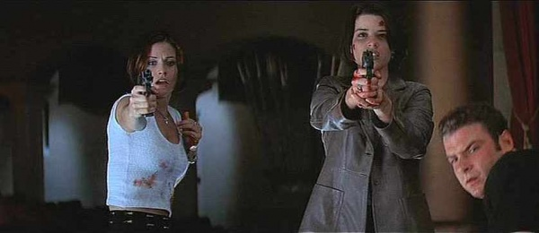

En el estreno oficial de Apuñalada (una película basada en la masacre desatada por Billy y Stu en Woodsboro) dos estudiantes universitarios; Phil Stevens y Maureen Evans, son asesinados en el cine por lo que parece ser un nuevo asesino que ha adoptado la identidad de Ghostface. Al día siguiente, los medios de comunicación descienden en la Universidad Windsor, donde Sidney Prescott, estudia junto a su nuevo novio Derek, y sus amigos Randy, Mickey, y Hallie. Al poco tiempo, Sidney recibe dos visitas inesperadas: a Gale Weathers cuya ambición por elevar su carrera la ha orillado a traer consigo a Cotton Weary para cubrir los reportajes del nuevo asesino, sin importarle lo mucho que afecta en la vida personal de Sid, mientras lucha contra su peor fanática, Debbie Salt; y a Dewey Riley quien ha venido para trabajar de cerca con la policía para protegerla.
Esa misma noche, las hermanas de la fraternidad hacen una fiesta. Pero una de ellas, Cici Cooper, se queda sola en la casa para ayudar a las que estén borrachas. De repente, es atacada por Ghosface. En el balcón, el asesino la apuñala dos veces en la espalda y luego la lanza al vacío. Luego de revisar la evidencia por intervención de Gale, la policía confirma que el nuevo asesino es un imitador de los asesinatos de Woodsboro y que por lo tanto la vida de Sid esta en peligro. Gale y Dewey se reúnen con Randy para descifrar el modus operandi del asesino con la esperanza de poder detenerlo antes de que la masacre se propague, el geek de películas de terror advierte que el asesino está siguiendo las "reglas" de las secuelas. En su discusión, los tres son interrumpidos por la siniestra voz del asesino (Roger L. Jackson) quien luego de atormentar a Randy consigue asesinarlo brutalmente en la camioneta de Joel (el nuevo cámara de Gale) mientras Gale y Dewey se encontraban ocupados buscándolo por el campus de la universidad. Sidney es puesta bajo protección de dos agentes, pero ni ellos evitan que la chica sea atormentada por el asesino quien de alguna manera consigue perseguirla y acosarla en lugares públicos. Con la muerte de Randy y un ataque de ira por parte de un enfurecido Cotton Weary, la policía toma la decisión de llevarse bajo protección civil a Sidney a un refugio. Mientras tanto en Windsor, Dewey y Gale revisan las cintas de las grabaciones de Joel, luego de que el último abandonara el campus por temor a convertirse en una víctima.
Antes de partir al refugio, al viaje se suma Hallie y Sidney se despide de su novio Derek, quien es raptado y castigado por sus hermanos de la fraternidad por haber regalado sus letras griegas (un collar) a su novia. Como castigo es atado semidesnudo a un material del teatro de la Universidad. En camino al refugio, Ghostface ataca salvajemente a la patrulla, lo que resulta en la muerte de los dos agentes y Hallie. Sidney se las arregla para escapar hasta el teatro de la Universidad donde es confrontada por el nuevo asesino que se revela ante ella como Mickey y acusa inmediatamente a Derek de ser cómplice. Recordando su terrible experiencia con Billy Loomis, Sid duda de la inocencia de su novio, dándole la oportunidad perfecta a Mickey de matar a Derek (quien resultó ser inocente después de todo) y presentar a su verdadero compañero: La Sra Loomis, la madre de Billy y la mente detrás de todo. Con el falso nombre de Debbie Salt y con una apariencia completamente cambiada, la Sra. Loomis se las arregló para venir al campus sin levantar sospechas y así ejecutar su plan para vengar la "injusta" muerte de su hijo, venganza que consiste prácticamente en matar a Sidney Prescott.
Tras revelarse como la asesina, la Sra. Loomis mata a balazos a Mickey debido a que el muchacho planeaba volverse famoso con la identidad de Ghostface. Sidney y la Sra. Loomis inician una violenta batalla en la que interviene Cotton rescatando a la chica que le arruinó su vida al dispararle en la garganta a la Sra. Loomis. Gale se aparece con una herida no muy grave y junto a Sidney remata a Mickey quien resucita brevemente para dar el susto final en vez de la Sra. Loomis, cuyo cráneo es perforado con una bala por Sidney "por si acaso". Unas horas después, Joel aparece en el campus decidido a terminar el reportaje junto a Gale, pero esta lo abandona cuando descubre que Dewey está vivo. Los reporteros tratan de entrevistar a Sidney creyéndola de nuevo la heroína. No obstante, Sid en señal de deuda, le da todo el crédito a Cotton y se va de la universidad.
